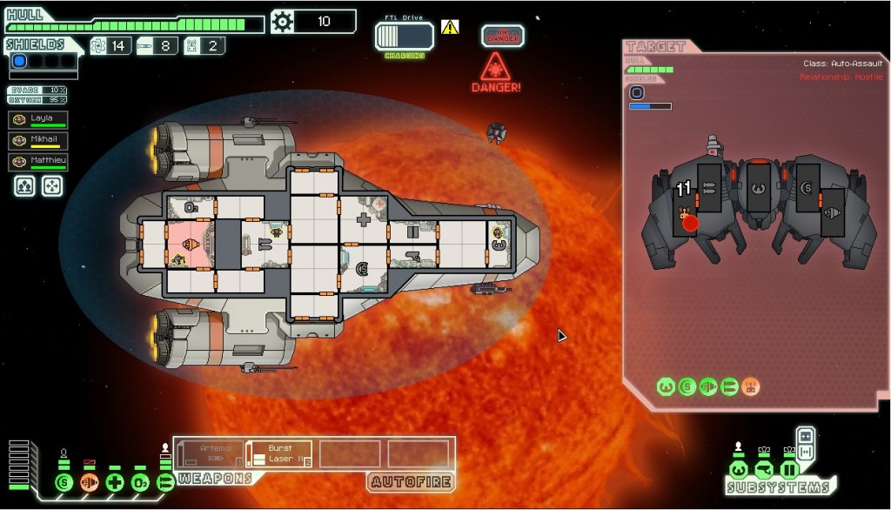

你是資深的 App 開發者，手上已有一堆酷炫遊戲了嗎？如果想透過 Firefox Martetplace 接觸更多消費者，或是早就聽過「Emscripten」的遊戲移植大法卻不太了解其中細節，就千萬別錯過共分成三集的 Emscripten 移植說明文章！
開放源碼的 Emscripten 編譯器，可將 C/C++ 原始碼編譯為高度最佳化的 JavaScript 子集 ─「asm.js」。原本針對桌機環境所撰寫的程式，也能夠於瀏覽器中執行。
透過 Emscripten 移植遊戲之後，可享有多個優點。而最重要的就是能觸及更多消費者。經由 Emscripten 所移植的遊戲，將能於任何新款的瀏覽器中執行；而且不需其他安裝程式或設定，只要開啟網頁即可。另可將遊戲資料儲存於瀏覽器的快取之內，代表更新之後也只要重新下載遊戲即可。如果你建構的是雲端資料儲存系統，則玩家更能在任何電腦的瀏覽器上盡情暢玩。
可透過下列連結進一步了解：
雖然 Emscripten 移植 C/C++ 程式碼的好處多多，但仍有幾件事需要考量。接著就簡略說明相關概念。
Part 1：準備
用 Emscripten 移植遊戲到底是否可行？如果真能移植，到底是多簡單？你首先要考慮以下的 Emscripten 移植限制：
- 不能有封閉的第三方函式庫
- 不能有執行緒
然後建議滿足其中數項條件：
- 圖形部分須使用 SDL2 與 OpenGL ES 2.0
- 音效部分須使用 SDL2 或 OpenAL
- 可支援現有的多重平台
就能讓移植作業更簡單。
首要檢查重點
如果你使用中的第三方函式庫並未開放原始碼，就不太妙了。你必須重新撰寫程式碼且不使用該函式庫」。
Emscripten 目前尚未支援執行緒。如果你極度依賴執行緒也會是個問題。「Web worker」之間並無法共享記憶體，因此不同於其他平台所謂的「執行緒」。所以你必須停用多執行緒。
SDL2
在真正接觸 Emscripten 之前，須先調整你的開發環境。首先你要使用 SDL2。SDL 函式庫將處理特定平台的作業，如建立視窗或處理輸入。Emscripten 現已移植不完整的 SDL 1.3。但另有完整的 SDL2 正移植中，且很快就會正式完成整合。

《超越光速 (Fast Than Light，FTL)》中的戰鬥場景。
OpenGL ES 2.0
再來就是使用 OpenGL ES 2.0。如果你的遊戲正在使用 SDL2 繪圖介面就免操煩了。如果你正使用 Direct3D，那就必須先寫個 OpenGL 版本的遊戲。這也是前面一開始就挑明最好支援多重平台的理由。
一旦弄出桌機的 OpenGL 版本之後，就必須再弄 OpenGL ES 版本的遊戲。ES 即為完整 OpenGL 的子集，其中可能無法使用某些功能且有其他限制。至少 NVidia 的驅動程式可支援 (可能 AMD 也支援) 在桌機上建立 ES 版本的內容。如此有利於你使用現有的環境與除錯工具。
你應該儘量避免已棄用的 OpenGL Fixed-function pipeline。雖然 Emscripten 可部分支援，但可能無法妥善運作。
你還會在這個階段遇到某些問題，例如可支援的擴充套件比較少，也可能要針對 Emscripten 重新撰寫著色器 (Shader)。如果你正使用 NVidia，就應在程式中加上 #version 以觸發更嚴格的著色器驗證。
針對浮點 (Floating-point) 與整數變數 (Integer variable)，GLSL ES 則需要精度限定詞 (Precision Qualifier)。NVidia 的實作於桌機上可接受精度限定詞，但其他大多數的 GL 實作則不支援。因此你最後可能需要 2 組不同的著色器。
OpenGL 進入點 (Entry point) 名稱在 GL ES 與桌機之間有所差異。GL ES 不需要如 GLEW 這類的元件載入函式庫 (Loader)，但你只要使用任何 GL 擴充套件，都必須另行手動檢查。另請注意，桌機上的 OpenGL ES 比 WebGL 來得寬鬆。舉例來說，WebGL 對 glTexImage 參數與 glTexParameter 取樣模式較為嚴格。
GL ES 也不一定支援 Multiple render targets (MRT)。如果你使用的是模版緩衝 (Stencil buffer)，也就一定會有深度緩衝 (Depth buffer)。你必須使用頂點緩衝 (Vertex buffer) 物件，而非 User-mode 的陣列。你也無法將 Index 與 Vertex 緩衝混合到相同的緩衝物件之中。
音效方面應使用 SDL2 或 OpenAL。但與桌機版的遊戲相較，其潛在問題就是 Emscripten 的 OpenAL 實作可能需要更多、更大的聲音緩衝，以避免類似雜訊的聲音 (Choppy sound)。
多平台支援功能
如果你的遊戲可支援多重平台當然很好，尤其是 Android 與 iOS 行動平台。會這麼說有兩個原因。第一，WebGL 本質上是 OpenGL ES 而非桌機版 OpenGL，因此你已經完成了 OpenGL 的大多數工作。第二，行動平台即使用 ARM 架構，代表已經修正了大多數的處理器特有問題。另由於 Emscripten 無法從記憶體載入未對齊資料，因此記憶體對齊 (Memory alignment) 特別重要。
在整理好 OpenGL 程式碼之後，就建議在 Linux 或 OS X 上進行編譯。這裡同樣有其理由。首先就是 Emscripten 即以 LLVM 與 Clang 為架構。如果你是用 MSVC 撰寫＼測試程式碼，就可能包含「MSVC 接受，但其他編譯器不接受」的非標準結構。另外，不同編譯器內的「Optimizer」可能發現錯誤，且相較於瀏覽器，這類錯誤在桌機上除錯會比較容易。
經 Emscripten 移植之後的 FTL 主選單。可注意到「Quit」按鈕消失了。且此版本的 UI 極類似 iPad 版本的 UI。
若要概略了解 Windows 版遊戲移植成 Linux 版本的方法，可參閱 Ryan Gordon 的《Steam Dev Days》。
如果你在使用 Windows 環境，也可以透過 MinGW 進行編譯。
看到這裡，你對 Emscripten 是否有進一步的了解呢？請繼續了解《運用 Emscripten 移植遊戲 (中)》所介紹好用的工具與第三方函式庫，請隨時注意我們分享的文章！